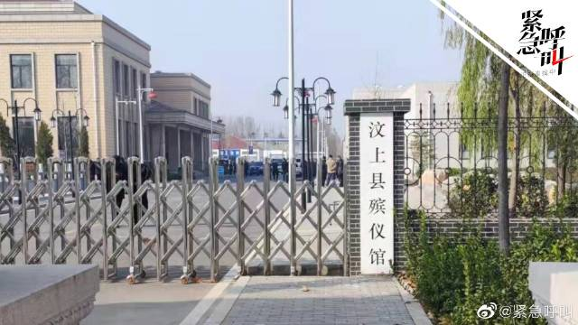

@新京报:【#喝药自杀女主播骨灰被掉包配阴婚# 系殡仪馆火化工偷换】近日，湖南主播“罗小猫猫子”在山东济宁汶上县喝药自杀，其骨灰被掉包配阴婚。据悉，系汶上县殡仪馆火化工邵某偷换死者骨灰，当地殡葬从业者张某和雷某某负责寻找买家、运输骨灰。爆料人称，阴婚配成功可挣5至7万元。张某妻子称，买家未相中骨灰，阴婚未配成功。目前，警方已将3名犯罪嫌疑人刑事拘留。@紧急呼叫 紧急呼叫的微博视频 1938万次播放 02:46

 紧急呼叫的微博视频
紧急呼叫的微博视频